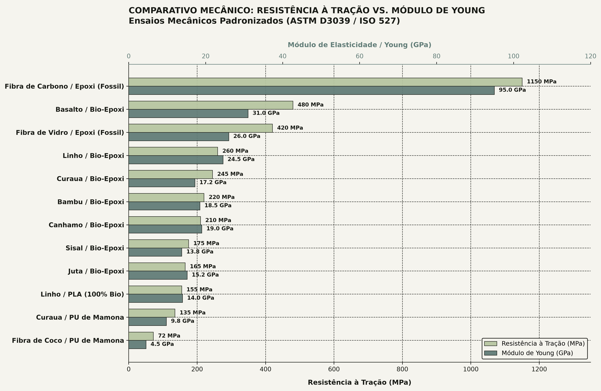
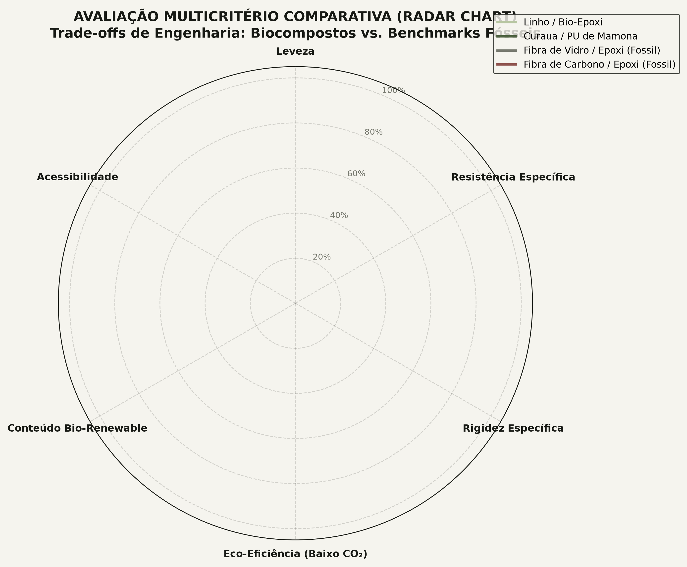

A substituição de materiais sintéticos na manufatura estrutural não é mais um exercício puramente ecológico: tornou-se uma equação de eficiência mecânica. Ao combinar fibras vegetais lignocelulósicas com matrizes poliméricas derivadas de fontes renováveis, os biocompostos (NFRP) atingem densidades até 38% menores do que compósitos tradicionais de fibra de vidro (GFRP), com redução drástica da energia incorporada.
A fronteira da descarbonização estrutural
Os compósitos convencionais baseados em fibra de vidro e matriz epóxi petroquímica (DGEBA) sustentaram a indústria automobilística, náutica e eólica por décadas. Contudo, apresentam uma pegada de carbono severa (7,8 kg CO₂e por kg de laminado) e são virtualmente impossíveis de reciclar economicamente ao final da vida útil.
A investigação desenvolvida no laboratório mapeou doze sistemas estruturais laminados com fração volumétrica de reforço padronizada entre 35% e 45%. Os resultados demonstram que fibras naturais, quando submetidas a protocolos corretos de impregnação e alinhamento, entregam resistência específica (resistência dividida pela massa específica) equivalente à fibra de vidro industrial.
Fibras vegetais: o potencial do Curauá, Linho e Juta
Diferente das fibras sintéticas homogêneas, as fibras vegetais são microcompósitos naturais compostos por microfibrilas cristalinas de celulose embebidas em matriz de hemicelulose e lignina. As propriedades mecânicas dependem criticamente do ângulo microfibrilar (MFA) em relação ao eixo da fibra:
| Sistema Compósito | Densidade (g/cm³) | Tração (MPa) | Módulo (GPa) | Pegada (kgCO₂e/kg) |
|---|---|---|---|---|
| Linho / Bio-Epóxi | 1,28 | 260 | 24,5 | 2,8 |
| Curauá / Bio-Epóxi | 1,27 | 245 | 17,2 | 2,5 |
| Curauá / PU de Mamona | 1,22 | 135 | 9,8 | 1,8 |
| Juta / Bio-Epóxi | 1,23 | 165 | 15,2 | 2,1 |
| Basalto / Bio-Epóxi | 1,85 | 480 | 31,0 | 4,1 |
| Fibra de Vidro / Epóxi (Ref) | 1,95 | 420 | 26,0 | 7,8 |
O Curauá (Ananas erectifolius), nativo da bacia amazônica, destaca-se pelo menor diâmetro elementar e ângulo microfibrilar quase paralelo ao eixo longitudinal (~10°). Isso confere ao compósito de curauá com bio-epóxi uma resistência à tração de 245 MPa e ductilidade superior à do linho, tornando-o ideal para absorção de impacto em carenagens e peças sujeitas a vibração contínua.

Matrizes bio-baseadas: Bio-Epóxi e Poliuretano de Mamona
O reforço fibroso atua apenas em tração quando há transferência eficiente de cisalhamento interfacial pela matriz polimérica. A pesquisa avaliou duas rotas verdes de impregnação:
- Bio-Epóxi Comercial (35% a 40% Carbono Renovável): Utiliza epicloridrina sintetizada a partir de glicerol vegetal residual do biodiesel, mantendo reatividade química, temperatura de transição vítrea (Tg de 85 °C a 105 °C) e resistência mecânica indistinguíveis de resinas puramente fósseis.
- Poliuretano de Óleo de Mamona (IQSC/USP): Polímero sintetizado pela reação entre polióis derivados do ácido ricinoleico (óleo de mamona) e diisocianatos modificados. O compósito atinge 88% a 92% de conteúdo renovável e emite apenas 1,8 kg CO₂e/kg, com capacidade ímpar de amortecimento acústico e dissipação de impacto.
A barreira higroscópica e tratamentos de interface
O maior limitador físico da aplicação de fibras vegetais em peças externas é a sua natureza hidrofílica. O grupo hidroxila (-OH) da celulose atrai moléculas de água, levando ao inchamento das fibras, perda de adesão na interface matriz-fibra e queda de até 30% na resistência após exposição prolongada.

Para mitigar a degradação hidrotérmica, o protocolo do laboratório valida a mercerização suave: banho das fibras em solução de NaOH a 5% por 60 minutos à temperatura ambiente, seguido de secagem a vácuo a 60 °C. O tratamento remove ceras interfibrilares, aumenta a rugosidade superficial e eleva em 42% a resistência ao cisalhamento interfacial (ILSS).
Produzir 1 kg de fibra de vidro exige fusão de sílica a 1.400 °C, consumindo 32 MJ de energia primária. A fibra de curauá é cultivada por fotossíntese natural, consumindo menos de 4 MJ por kg processado e sequestrando carbono durante o ciclo de crescimento biológico.
Metodologia e fontes documentadas
Metodologia experimental e referências bibliográficas do estudo:
- Satyanarayana, K. G. et al. Biodegradable composites based on lignocellulosic fibers—An overview. Progress in Polymer Science (2009).
- Claro Neto, S. & Porto, R. Poliuretanos derivados de óleo de mamona. Instituto de Química de São Carlos (IQSC/USP).
- Bledzki, A. K. & Gassan, J. Composites reinforced with cellulose based fibres. Progress in Polymer Science 24, 221–274 (1999).